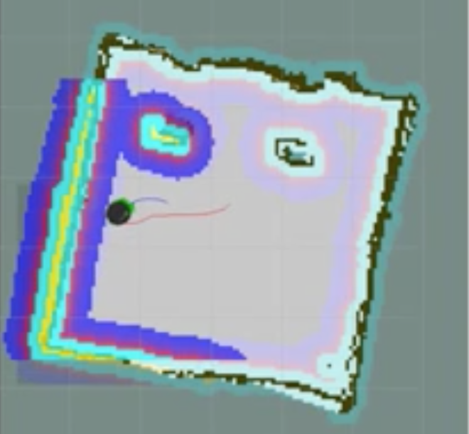

|
Research
Autonomous Humanoid Robot, AcYut
Mentor – Prof. B. K. Rout (Aug 2013 — Present)
 |
Worked at the Center for Robotics and Intelligent Systems (CRIS), BITS Pilani, developing a completely autonomous humanoid robot capable of playing soccer [Website]
Implemented algorithms for distortion correction in fish-eye lens for the application of Inverse Perspective Mapping
Designed a novel method for detecting field line intersections and utilized the additional localization cues to increase the particle filter accuracy [Publication]
Developed the behavior control framework of the robot using XABSL
|
Workload Prediction for Cloud Data Centers
Mentor – Prof. S. Balasubramanium (Aug 2016 — Present)
 |
My undergraduate thesis project, which is a collaboration between Hewlett-Packard Enterprises (HPE) and BITS Pilani
Developed approaches based on user behavior modeling for the prediction of future workloads
Analyzed the predictability of multiple resources using the autocorrelation function (ACF) for various time lags
Implemented models based on Support Vector Regression (SVR) for prediction of future CPU and memory usage based on historical data
|
Content Based Image Retrieval for Shekhawati Paintings
Mentor – Prof. S. Balasubramanium (Jan — May 2016)
 |
Objectives of the project were to segment the images to identify areas of interest, maximize the recall of the retrieval algorithms and to assert a ranking in the images retrieved based on their relevance
Implemented graph-based segmentation techniques to segment out the areas of interest in the input image
Designed SVM based classifiers that utilized HOG features to classify segmented portions of the image into various semantic classes [Report]
|
Multi-Robot Task Allocation Using TurtleBots
Mentor – Prof. Sudeept Mohan (Jan — Dec 2015)
|
 |
Implemented algorithms based on Constrained Delaunay Triangulation (CDT) for the Multi-Robot Task Allocation Problem
Modeled the partitioning problem into the Maximally Balanced Connected Partitioning problem
Implemented the wireless message passing framework for TurtleBots
|
|